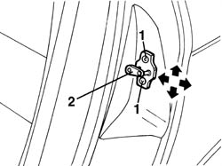

7010A10 rear side door - adjust striker and adapt seal if necessary
- Path
- Procedures > 70 FITTINGS > 7010 PASSENGER COMPARTMENT REAR SIDE DOORS > 7010A rear side door assembly > 7010A10 rear side door - adjust striker and adapt seal if necessary
- Kind
- repair procedure (removal / refitting; the operation number is the code)
- Applies to
- all engines; all production periods
- Interactive page
- https://sloeber94.github.io/elrnDB-a156/en/#/3238635
Applies to: all engines; all production periods
Before changing the door striker location, check the right alignment of the door itself. If necessary: 7010A14 rear side door - adjust centering and moulding - includes adaptation of hinges and seals on door compartment
1. Unloose the striker screws.
2. Move the striker in the right location exploiting the screw slotted holes.
For a right striker adjustment it could be necessary to insert suitable thicknesses.
Arrows show the permitted movements for the adjustment.

Applies to: all engines; all production periods
Tighten the screws.
Check the right fit between striker and door lock and the alignment at closed door.